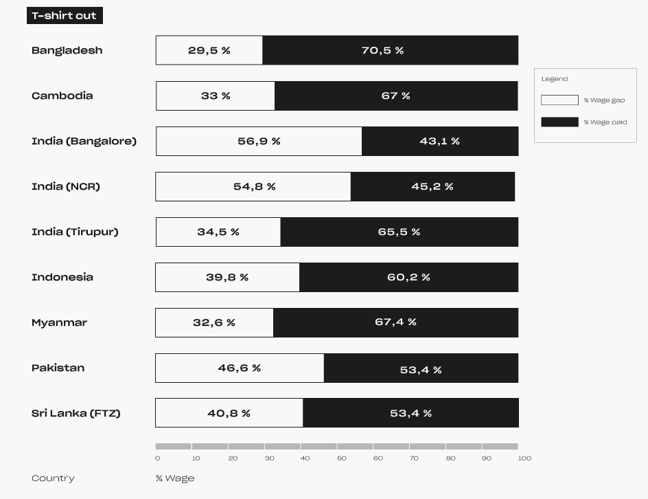

ABOUT
Millions of workers have not been paid their full wages during the first three months of the pandemic. By considering the evolution of the Covid-19, three waves can be identified.
01. Origins: the transportation of raw materials from China to other garment producing countries was suspended and many factories were forced to close temporarily.
02. Expansion: The pandemic has spread to Europe and the United States. In response to a sudden drop in consumer demand for apparel, brands cancelled and refused to pay for shipments of completed and in production orders. As a result, factories were forced to close and dismiss workers en masse. Each time factories were forced to close, workers were often sent home without notice or pay from their employers.
03. Persistence: the wave of devastation continues as the virus itself spreads in garment producing countries. The impact from the loss of regular pay for millions of garment workers is compounded by the fact that most workers only earn poverty wages. As a result of the industry’s low wages, workers are unable to accumulate savings and are often in debt.
In this reality, brands have failed to take meaningful action to improve the industry’s poverty wages. Moreover, most garment production is carried out in countries where social protections and unemployment benefits are the weakest in the world or where workers are employed informally.
How many workers were unpaid or underpaid in the most productive countries from march to may 2020?
The report Un(der)paid in the pandemic published by the Clean Clothes Campaign team research, concerns the wage gap of 50 million workers in seven countries during the first phase of Covid-19 pandemic. It estimates that garment workers worldwide owe 5.78 billion USD in wages for the first three months of the pandemic alone.
The countries showed similar developments: April was worse than March in all countries, and May was slightly better in almost all countries, except for Cambodia and Indonesia, where the pandemic seemed to have gotten worse every following month.
Which were the relevant aspects in the analyzed dataset?
For the development of this infopoetry, relevant features were identified with the goal of showing the estimated relationship between the number of workers and the wage gap (between March and May 2020) for each country analyzed. The selected data, therefore, aims to highlight the hardships faced by workers involved in the report and their exploitation by the brands most well-known to the public.
The data was encoded via one of the most common products in the global garment industry: a set of T-Shirts.
More specifically, the data was encoded using two different approaches. The first is the physical object cut: the length of the T-Shirt is directly proportional to the average estimated wage gap in percentage during the analyzed time-range. In contrast, the second is label length which is directly proportional to the estimated workers per Country. The goal was to create a contrast between the amount of people and the wage gap through two physical histograms (T-Shirt cut and label design).
The page of each T-Shirt contains: short description (number of workers and estimated wage gap for each country in percentage), price (average monthly wage in USD) and size (estimated average wage gap in USD). This last one was identified according to a predetermined range. So, lost wages aims to be a sort of solidarity campaign: by purchasing a T-shirt, the user can bridge the wage gap of a worker in the represented country.
The purpose of Lost wages is to demonstrate the breadth of the wage gap workers face.
This infopoetry is dedicated to visualizing the consequences of Covid-19 pandemic on garment industry workers, by showing the wage gap percentage of millions of workers from the most productive countries. The concept stems from the desire to provoke and make people reflect on what is hidden behind the production of clothing that we usually buy and wear. From this message, follows the choice of metaphor and media through which to present it: a dystopian store similar in appearance to those we browse daily to buy our clothes, but where the products have a story to tell and are carriers of information relating to human exploitation.